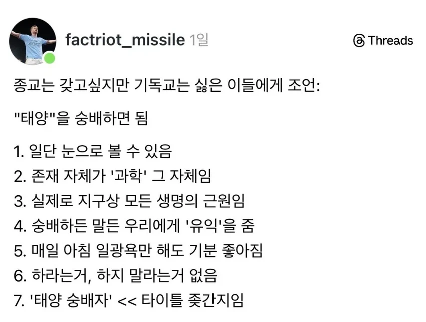
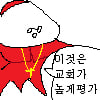

오.....
근데 태양을 섬기면 썬크림은 바르면 안되는건가

오.....
근데 태양을 섬기면 썬크림은 바르면 안되는건가
4-1.이 시대에 현존하시는 위대한 태양님께서는 우리 모두를 사랑하시고 이해하시기에 우리에게 끝임없는 선물인 햇빛이라는 축복 선사해 주시었다
4-2.하지만 이 축복을 다 받아들이지 못하는 가엽고 여린자인 '그늘진 자'들을 보며 자신의 축복으로 고통받는 이들 있다는 사실에 오랜시간을 슬픔에 빠져 탄식에 빠지게 되었나니
4-3. 햇빛쨍쨍단의 신도들의 도움으로 조금이라도 다같이 축복의 기쁨을 느끼게 해줄 수 있는 '선크림'이라는 성유물의 발명에 서로를 보살피며 끌어안아주는 모습을 보며 매우 흡족하시었도다
저는 태양님이 선크림도 이해해주실거라 믿어요
호주에서는 위험한 종교라고 박해받을순있음
"썬크림을 바르지 않는 자."
예수쟁이들도 예수를 숭배하지만 예수의 선행은 따르지 않으니 태양쟁이들도 썬크림 발라도 됨

태양 숭배자=ㅈㄴ 이단 같음. 날으는 스파게티를 섬기자. 교리도 완벽함
"근데 태양을 섬기면 썬크림은 바르면 안되는건가"
이걸로 싸우는게 종교고
썬크림파 논썬크림파 유기농썬크림파 자연그대로썬크림파 태닝파 쌔까맣게태닝파 졸라 늘어나서 지들끼리 종교 전쟁 일으키겠지
이것도 좀 그런게 이미 태어날때부터 태양의 축복 그을음을 갖고 태어나는사람들이 있음 신앙심 차이로 쉽지않응
이단이지
죽여라
‘태양 숭배자‘ 효과
버프: 위 모든 나열사항들
디버프: 급속한 피부노화 진행 및 다음 행동시 ‘외출시 썬크림 절대 사수자‘ 들로부터 맹렬한 비웃음을 당합니다.
•자외선 차단 효과가 조금이라도 들어있는 화장품 사용
•양산 사용
•횡단보도 앞에 서있거나 길거릴 걸을 때 그늘 쪽을 걷는 행위
•햇살 보고 눈살을 찌푸리거나, 기침을 하거나, 손바닥으로 햇살을 가리는 행위
•햇빛을 가릴 용도임이 명백한 챙모자, 썬바이저, 얼굴 전면 가림 마스크 착용
케프리라아툼
이바쓰나민 자딧
태양만세
그 논리면 차라리 신창섭을 믿어라
원래 기독교에서 갓 대신 태양을 대입하면 문맥해결됨
Praise the sun!
태양 만세!
↖[T]↗
태양광 발전기 설치하면 실질적인 이익도 줌 ㄷㄷ
그래봤자 몇억년 후에 사라질 시한부 신 아닌가
발라도 됨. 태양을 숭배하는 거지 자외선을 숭배하는 게 아니잖아.
태양을 숭배하면 왜 선크림을 바르면 안돼??
태양빛은 숭고하지만 나약한 인간의 몸인지라 좀 바르겟수다~! 대신 숭배 하자나~!
언젠가 한줌 별의 모래가 되는 그 날부턴 다시금 태양의 일부가 되는 것을
난 공룡 숭배자임
치킨 먹어서 하나가 될 거임
태양신 ㄷㄷ